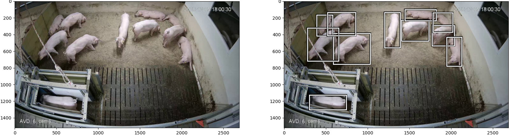

System Overview
Modern surveillance and crowd safety systems require instantaneous situational awareness without dropping frames. This project introduces an end-to-end multi-threaded analytics pipeline that consumes video feeds, performs hardware-accelerated YOLOv8 object detection, maps persistent object trajectories via ByteTrack, and evaluates custom user-defined geometric polygon zones in real time.

Key Innovations & Features
Real-Time Detection & Tracking
Leverages optimized YOLOv8 for per-frame bounding box extraction paired with ByteTrack's association matching for persistent track IDs even through heavy occlusion and intersecting crowd trajectories.
Zone-Based Spatial Analytics
Allows operators to define arbitrary polygon regions of interest (entrances, emergency corridors, transit platforms). Point-in-polygon algorithms compute live dwell time and crowd density per zone.
Directional Flow Estimation
Computes temporal displacement vectors for every tracked individual within each polygon to determine dominant group heading (North, South, East, West) and spot counter-flow bottlenecks.
Automated Alerting & Auditing
Emits structured JSON events and logs warnings to logs/run.log whenever zone occupancy or dwell durations breach configurable thresholds, enabling rapid emergency dispatch.
Modern Gradio Web Console
Interactive dashboard providing live stream visualization, interactive polygon zone drafting, metric charts, threshold adjustments, and video export controls.
Multi-Threaded Decoupling
Dedicated threads for video decoding, GPU inference, tracking computation, and UI rendering connected through thread-safe queues ensure zero frame drops.
Pipeline Architecture
┌────────────────┐ Decoded Frame ┌────────────────────────┐
│ RTSP / Video │ ────────────────────► │ YOLOv8 Inference │
│ Input Stream │ │ (GPU Batch Tensor) │
└────────────────┘ └───────────┬────────────┘
│ Detections
▼
┌────────────────┐ Spatial Trajectory┌────────────────────────┐
│ Zone Polygon │ ◄──────────────────── │ ByteTrack Associator │
│ Point-in-Poly │ │ (Persistent Kalman ID)│
└───────┬────────┘ └────────────────────────┘
│
├─────────────────────────────┬───────────────────────────┐
▼ ▼ ▼
┌────────────────┐ ┌────────────────┐ ┌────────────────┐
│ Density & Flow│ │ Automated Alert│ │ Gradio Console │
│ Vector Engine │ │ JSON Log Queue │ │ Dashboard UI │
└────────────────┘ └────────────────┘ └────────────────┘Demonstration Assets
Direct video files are accessible directly on the repository: